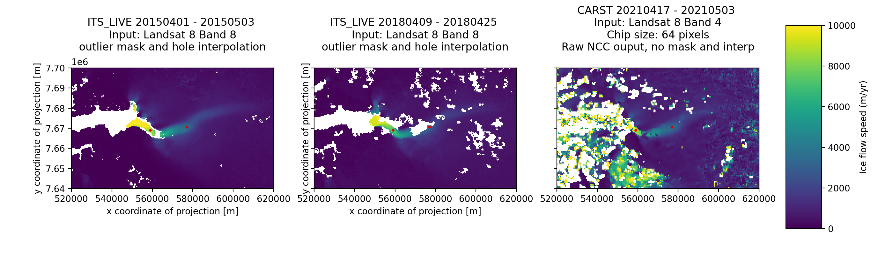
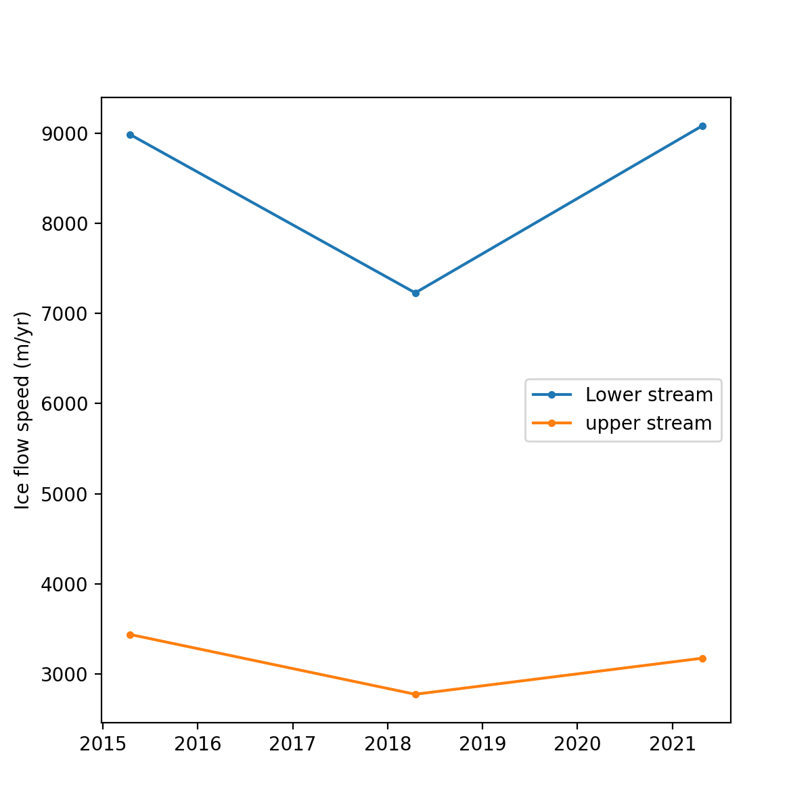

Mapping ice flow velocity using an easy and interactive feature tracking workflow¶
Authors¶
Author1 = {“name”: “Whyjay Zheng”, “affiliation”: “University of California Berkeley”, “email”: “whyjz@berkeley.edu”, “orcid”: “0000-0002-2316-2614”}
Author2 = {“name”: “Shane Grigsby”, “affiliation”: “University of Maryland / NASA Goddard Center”, “email”: “grigsby@umd.edu”, “orcid”: “0000-0003-4904-7785”}
Author3 = {“name”: “Facundo Sapienza”, “affiliation”: “University of California Berkeley”, “email”: “fsapienza@berkeley.edu”, “orcid”: “0000-0003-4252-7161”}
Author4 = {“name”: “Jonathan Taylor”, “affiliation”: “Stanford University”, “email”: “jonathan.taylor@stanford.edu”, “orcid”: “0000-0002-1716-7160”}
Author5 = {“name”: “Tasha Snow”, “affiliation”: “Colorado School of Mines”, “email”: “tsnow@mines.edu”, “orcid”: “0000-0001-5697-5470”}
Author6 = {“name”: “Fernando Pérez”, “affiliation”: “University of California Berkeley”, “email”: “fernando.perez@berkeley.edu”, “orcid”: “0000-0002-1725-9815”}
Author7 = {“name”: “Matthew Siegfried”, “affiliation”: “Colorado School of Mines”, “email”: “siegfried@mines.edu”, “orcid”: “0000-0002-0868-4633”}
Motivation and Purpose¶
Observations of ice flow velocity provide a key component for modeling glacier dynamics and mass balance. Applying a feature-tracking technique to satellite visible or synthetic aperture radar imagery is one of the most commonly used methods for deriving ice flow velocity from remote sensing data. Despite being cost-effective compared to field measurements, implementing a feature-tracking workflow is not trivial because:
Searching for high-quality data can be time consuming
Fetching large-volume source imagery can be logistically challenging
There is no standardized pipeline for feature-tracking processes.
Here we present an interactive, notebook-based interface that deploys an entire feature tracking workflow. This open-source tool aims to provide researchers, educators, and other users an accessible and reproducible method for performing glacier feature tracking.
Technical contributions¶
We develop a fully customizable and extensible workflow for mapping glacier velocities using a feature-tracking technique.
We develop two Python libraries, GeoStacks and EZTrack, for general spatial and domain-specific processes respectively. For details about GeoStacks, see our other team submission entitled GeoStacks: a library for efficient query and stacking of satellite remote sensing data sets.
We build a Jupyter notebook interface for each step in our feature-tracking workflow, including data query, parameter selection, and interactive visualization.
Methodology¶
The modularized workflow consists of the following steps:
Query data
Retrieve and aggregate data into system memory
Select feature-tracking kernel and parameters
Filter data for feature enhancement
Perform feature tracking
Mask outliers and interpolate results as needed
Visualize and export results
We combine multiple open sources packages for most of these routines, including pandas, geopandas, shapely, ipyleaflet, ipywidgets, xarray, rasterio, and matplotlib. For the first steps, we use the GeoStacks package to showcase its potential application. For this demo notebook, we use CARST (Cryosphere And Remote Sensing Toolkit) and ITS_LIVE as the core feature tracking processes and data sources. CARST uses the NCC kernel ampcor from the ISCE software for feature tracking. Nevertheless, the feature tracking kernel and all related filters, masks, and interpolation processes can be easily replaced by other tools from a different feature tracking package (e.g., autoRIFT; Lei et al., 2021) or a user-defined function.
Results¶
In our demo notebook, we query data over Jakobshavn Isbræ, a large outlet glacier of the Greenland Ice Sheet with a history of seasonal flow speed variation (e.g., Khazendar et al., 2019; Riel et al., 2021). Users can choose to explore the readily available ITS_LIVE velocity or perform feature tracking using the Landsat 8 imagery. In this mini-study, we derive the spring speed change of Jakobshavn Isbræ during 2015–2021 (a few weeks before the EarthCube meeting) using both ITS_LIVE and CARST-derived data and find that the slowdown event at Jakobshavn in 2017/2018 seems to have been a temporary event: in 2021, Jakobshavn’s spring speed increases and likely reaches back to the peak between 2013 and 2016.
This demo notebook provides an easy and interactive way to deploy an entire feature-tracking use-case. This workflow will allow researchers of any skill level to explore new data, compare different algorithms, and visualize and validate their results. This tool also shows the full potential for education uses since it lowers the technical threshold for manipulating satellite data and deriving glacier speeds. The modules used by this demo notebook, including the GeoStacks and CARST packages, are open-source software and welcome community contributions.
Funding¶
Award1 = {“agency”: “US National Science Foundation”, “award_code”: “1928406”, “award_URL”: “https://nsf.gov/awardsearch/showAward?AWD_ID=1928406” }
Award2 = {“agency”: “US National Science Foundation”, “award_code”: “1928374”, “award_URL”: “https://nsf.gov/awardsearch/showAward?AWD_ID=1928374” }
Keywords¶
keywords=[“glacier velocity”, “feature tracking”, “ice flow”, “remote sensing”, “ITS_LIVE”]
Citation¶
Zheng, W., Grisby, S., Sapienza, F., Taylor, J., Snow, T., Pérez, F., & Siegfried, M. (2021). Mapping ice flow velocity using an easy and interactive feature tracking workflow. Accessed x/x/xxxx at https://github.com/whyjz/EZ-FeatureTrack
Suggested next steps¶
Future integration of this work with a numerical glacier model or a web-based service is possible.
Setup¶
# Developer's setting
%load_ext autoreload
%autoreload 2
%matplotlib widget
First, we import
GeoStacks, which provides processes for accessing spatial data and their metadata. Here we have one class:SpatialIndexLS8for Landsat 8. As we continue to develop theGeoStackslibrary, more satellite data sets will be available for query in the future.EZTrack, which provides the UI, feature-tracking core, and some related processes (e.g., spatial filters, data storage, etc.)
# This lets GDAL read a file through a URL without issues
import os
os.environ['GDAL_SKIP'] = 'DODS'
# Load core modules
from geostacks import SpatialIndexLS8
from eztrack import eztrack_ui
# Load additional modules
import matplotlib.pyplot as plt
import rasterio
from rasterio.plot import show
import numpy as np
from datetime import date
This is the Open Source version of ISCE.
Some of the workflows depend on a separate licensed package.
To obtain the licensed package, please make a request for ISCE
through the website: https://download.jpl.nasa.gov/ops/request/index.cfm.
Alternatively, if you are a member, or can become a member of WinSAR
you may be able to obtain access to a version of the licensed sofware at
https://winsar.unavco.org/software/isce
Read LS8 spatial indices¶
To query available data on an interactive map, we use the LS8 corner points for the spatial extent for each path/row combination. See the GeoStacks repo for more details.
ls8_index = SpatialIndexLS8('./LANDSAT_8_C1_cornerpoints.csv')
ls8_index.read() # read the CSV into spatial index
ls8_index.footprint # this is a geopandas DataFrame containing footprint of each Path/Row combination.
| path | row | lon_CTR | lat_CTR | geometry | |
|---|---|---|---|---|---|
| 0 | 1 | 2 | -4.197763 | 80.002493 | POLYGON ((-2.73002 81.20570, 2.59456 79.71746,... |
| 1 | 1 | 3 | -10.561457 | 79.111023 | POLYGON ((-9.99477 80.33234, -4.15668 78.95795... |
| 2 | 1 | 4 | -15.970556 | 78.118527 | POLYGON ((-16.04544 79.34425, -10.01855 78.079... |
| 3 | 1 | 5 | -20.471403 | 77.048224 | POLYGON ((-20.97844 78.26901, -14.98803 77.105... |
| 4 | 1 | 6 | -24.338152 | 75.902095 | POLYGON ((-25.13378 77.11339, -19.30751 76.041... |
| ... | ... | ... | ... | ... | ... |
| 21898 | 233 | 242 | 44.207091 | 80.008794 | POLYGON ((51.28225 80.15426, 45.38953 78.79931... |
| 21899 | 233 | 243 | 36.728885 | 80.760793 | POLYGON ((44.27339 81.05282, 38.82326 79.58492... |
| 21900 | 233 | 244 | 28.123821 | 81.338812 | POLYGON ((35.89000 81.79801, 31.32504 80.22170... |
| 21901 | 233 | 245 | 18.551148 | 81.705630 | POLYGON ((26.54158 82.32623, 23.32388 80.66332... |
| 21902 | 233 | 248 | -11.314870 | 81.338539 | POLYGON ((-7.24108 82.42211, -4.41066 80.74283... |
21903 rows × 5 columns
This shows the center lat/lon (lon_CTR and lat_CTR) for each LS8 path/row combination, and their image extent specified by the geometry field. For example, the path/row 001/002 has a center coordinate of (80.0025 N, 4.1978 W). There are only 21,903 available records instead of \(233 \times 248 = \) 57,704 because not all path/row combinations have at least one valid scenes (i.e., Landsat 8 does not take images on ocean surface).
The query_pathrow method¶
The SpatialIndexLS8 class also comes with a query_pathrow method that uses quad tree and point-in-polygon spatial algorithms (See the GeoStacks repo for more details). It queries all Path/Row combinations that cover a query point.
query_pt = [-50., 69.] # in lon/lat format; i.e., (50E, 69N)
idxs = ls8_index.query_pathrow(query_pt)
ls8_index.footprint.loc[idxs]
| path | row | lon_CTR | lat_CTR | geometry | |
|---|---|---|---|---|---|
| 695 | 8 | 11 | -47.813174 | 69.606470 | POLYGON ((-49.04594 70.75626, -44.45141 69.997... |
| 696 | 8 | 12 | -49.506130 | 68.279699 | POLYGON ((-50.74347 69.41965, -46.36735 68.700... |
| 782 | 9 | 11 | -49.355231 | 69.606482 | POLYGON ((-50.58956 70.75716, -45.99051 69.997... |
| 783 | 9 | 12 | -51.046291 | 68.279697 | POLYGON ((-52.28549 69.42048, -47.90452 68.700... |
| 866 | 10 | 11 | -50.895321 | 69.606439 | POLYGON ((-52.13270 70.75647, -47.53033 69.996... |
| 6845 | 81 | 233 | -48.202833 | 69.606467 | POLYGON ((-44.96551 69.15807, -49.29514 68.442... |
| 6915 | 82 | 233 | -49.749759 | 69.606440 | POLYGON ((-46.51348 69.16081, -50.84713 68.444... |
| 7017 | 83 | 232 | -49.604053 | 68.279726 | POLYGON ((-46.58181 67.80603, -50.70937 67.125... |
| 7018 | 83 | 233 | -51.293647 | 69.606447 | POLYGON ((-48.05298 69.15870, -52.38942 68.442... |
| 7087 | 84 | 232 | -51.145138 | 68.279691 | POLYGON ((-48.12431 67.80870, -52.25525 67.127... |
This subset shows all 10 path/row combinations at the given query point (50E, 69N) where Landsat 8 scenes are available.
The Feature Tracking UI¶
With information from a SpatialIndex object, we build up a UI that allows users to query Landsat 8 and ITS_LIVE data.
cpanel = eztrack_ui(spatial_index=ls8_index)
cpanel.gen_ui()
The show_ft_parames allows you to adjust the most important parameters for feature tracking using the Jupyter widgets:
reference window size: The size of reference window (aka chip or template for feature matching) in pixels.search window size: The size of search window in pixels. How many pixels do you expect your feature to move? The default is 20 pixels here, which means the maximum detectable feature displacement is 20 * (pixel spacing) = 600 m (Band 4) or 300 m (Band 8).skip size: The size of the output image resolution, in multiplier of pixels (e.g., 1 = 1 pixel = original resolution). The less this number is, the longer the computation would take.
All the modifications are passed to the UI immediately.
cpanel.show_ft_params()
You can view entire parameter set by typing the following command.
cpanel.ft_params.pxsettings
{'refwindow_x': 64,
'refwindow_y': 64,
'searchwindow_x': 20,
'searchwindow_y': 20,
'skip_across': 64,
'skip_down': 64,
'oversampling': 16,
'threads': 8,
'gaussian_hp': False,
'gaussian_hp_sigma': 3.0}
Feature tracking results or the selected ITS_LIVE data are stored in cpanel.results once the run button is clicked. The data structure of cpanel.results depends on the data/kernel selection:
ITS_LIVE:
xarrayobjectCARST:
rasteriodataset
cpanel.results
<open DatasetReader name='20210417-20210503_velo-raw_mag.tif' mode='r'>
You can also view messages or errors generated by the UI during the feature tracking processes by accessing cpanel.output. For ITS_LIVE, this will let you get the URL if you want to download the selected scenes. For CARST, you can check the messages generated from each feature tracking steps.
cpanel.output
Mini study: The evolution of ice speed at Jakobshavn Isbræ, Greenland¶
This section aims to provide a step-by-step guide of how to use the feature tracking UI by carrying out a mini science exploration. Our goal is to see the evolution of ice flow speed at Jakobshavn Isbræ, Greenland, since 2015. This outlet glacier experienced a multi-year slow-down event in at least 2017 and 2018 (e.g., Khazendar et al., 2019; Riel et al., 2021), and we will find whether this trend continues to 2021.
We first retrieve ITS_LIVE ice speed over Jakobshavn from 2015 and 2018. Since ITS_LIVE does not provide any results after 2018, we use CARST to calculate ice speed Jakobshavn in 2021. We use spring (April) scenes from all these years to minimize the bias from seasonal speed variaion.
2015 speed (ITS_LIVE)¶
First, launch the UI from the previous section. The default marker location is already over Jakobshavn Isbræ so you don’t need to change it, but feel free to move it around to see how this UI works. The panel in the left shows all available Landsat 8 path and row combinations. Selection 009/011, and check ITS_LIVE (online ready) as the Data/Kernel.
Now, press Search for dates. You should be able to see a full list of available ITS_LIVE scenes in the right panel. select 2015-04-01 / 2015-05-03 / 32 days and click Get data button. You can ignore the band button when querying the ITS_LIVE data set.
After the data are loaded, execute the following cell.
speed2015 = cpanel.results.copy(deep=True)
2018 speed (ITS_LIVE)¶
Now select 2018-04-09 / 2018-04-25 / 16 days and click Get data button again. After the data are loaded, execute the following cell.
speed2018 = cpanel.results.copy(deep=True)
2021 speed (CARST)¶
You can consider uncommenting and running the following cell for getting the same results presented in the bottom of this Notebook. Warning: if you do this on Binder, it will take a quite long time to run (~1-2 hours) since Binder does not allocate sufficient memory for a feature tracking process with such a high resolution. We recommend turning this cell on only if you are using a local machine with sufficient CPU and memory resources.
# cpanel.ft_params.pxsettings['skip_across'] = 16
# cpanel.ft_params.pxsettings['skip_down'] = 16
Now switch the Data/Kernel to CARST and hit Search for dates button again. In the right panel, hold the Ctrl button and select 2021-04-17 and 2021-05-03. Select B4 as the input band, and click the Get data button. This will download the corresponding Landsat scenes and run feature tracking using the default parameter settings, which will take a few minutes on the Binder server (may be faster on your powerful local machine). You can also try to use Band 8 as input or change the parameter settings by running cpanel.show_ft_params() or tweaking cpanel.ft_params.pxsettings. Generally speaking, Band 8 needs 4X more time to process than Band 4 because its pixel spacing (15 m) is smaller than that of B4 (30 m).
After the feature tracking process is done (indicated by the little hollow circle in the upper right window), you can run the the following cell.
speed2021 = rasterio.open(cpanel.results.name)
Visualizing results¶
Now we are ready to see the results!
fig, ax0 = plt.subplots(1, 3, figsize=(14, 4), sharex=True, sharey=True)
xlim = [520000, 620000]
ylim = [7640000, 7700000]
handle = speed2015.v.plot(ax=ax0[0], robust=True, cmap=plt.cm.viridis, vmin=0, vmax=10000, add_colorbar=False)
ax0[0].axis('image')
speed2018.v.plot(ax=ax0[1], robust=True, cmap=plt.cm.viridis, vmin=0, vmax=10000, add_colorbar=False)
ax0[1].axis('image')
show(speed2021, ax=ax0[2], cmap='viridis', vmin=0, vmax=10000./365.25)
ax0[0].set_xlim(xlim)
ax0[0].set_ylim(ylim)
plt.subplots_adjust(left=0.08, right=0.85)
cax = plt.axes([0.88, 0.1, 0.04, 0.8])
cbar = plt.colorbar(handle, cax=cax)
cbar.set_label('Ice flow speed (m/yr)')
ax0[0].scatter([559000, 577000], [7669000, 7670700], s=4, c='xkcd:red')
ax0[1].scatter([559000, 577000], [7669000, 7670700], s=4, c='xkcd:red')
ax0[2].scatter([559000, 577000], [7669000, 7670700], s=4, c='xkcd:red') #, linewidths=0.5, edgecolors='xkcd:black')
ax0[0].set_title('ITS_LIVE 20150401 - 20150503 \n Input: Landsat 8 Band 8 \n outlier mask and hole interpolation \n')
ax0[1].set_title('ITS_LIVE 20180409 - 20180425 \n Input: Landsat 8 Band 8 \n outlier mask and hole interpolation \n')
ax0[2].set_title('CARST 20210417 - 20210503 \n Input: Landsat 8 Band 4 \n Chip size: 64 pixels \n Raw NCC ouput, no mask and interp \n')
Text(0.5, 1.0, 'CARST 20210417 - 20210503 \n Input: Landsat 8 Band 4 \n Chip size: 64 pixels \n Raw NCC ouput, no mask and interp \n')
You plot should look similar to this – except that the CARST result here uses a skip size of 16 (so the resolution is finer).

The red dots on the map mark where we are going to sample the speed from all three maps!
vel_pt1 = []
vel_pt1.append(speed2015.v.sel(x=[559000], y=[7669000], method="nearest"))
vel_pt1.append(speed2018.v.sel(x=[559000], y=[7669000], method="nearest"))
for val in speed2021.sample([(559000, 7669000)]):
tmp = val * 365.25
vel_pt1.append(tmp)
vel_pt1 = np.array(vel_pt1, dtype=object)
vel_pt2 = []
vel_pt2.append(speed2015.v.sel(x=[577000], y=[7670700], method="nearest"))
vel_pt2.append(speed2018.v.sel(x=[577000], y=[7670700], method="nearest"))
for val in speed2021.sample([(577000, 7670700)]):
tmp = val * 365.25
vel_pt2.append(tmp)
vel_pt2 = np.array(vel_pt2, dtype=object)
time_x = [date(2015, 4, 16), date(2018, 4, 17), date(2021, 4, 25)]
vel_pt2
array([[3436.0],
[2772.0],
[3172.362548828125]], dtype=object)
Now it’s time to plot them! From the figure, you should be able to see the slowdown event at Jakobshavn in 2017/2018 seems to have been a temporary event: in 2021, Jakobshavn’s spring speed increases and likely reaches back to the peak between 2013 and 2016. We have attached the our results below for you to compare with your results (for reproducibility).
fig, ax1 = plt.subplots(1, 1, figsize=(6, 6))
ax1.plot(time_x, vel_pt1, '.-', label='Lower stream')
ax1.plot(time_x, vel_pt2, '.-', label='upper stream')
ax1.set_xlabel('Year')
ax1.set_ylabel('Ice flow speed (m/yr)')
ax1.legend()
<matplotlib.legend.Legend at 0x7f66ab95f490>

References¶
Whyjay Zheng, William J. Durkin, Andrew K. Melkonian, & Matthew E. Pritchard. (2021, March 10). whyjz/CARST: CARST v2.0.0a1 (Version v2.0.0a1). Zenodo. http://doi.org/10.5281/zenodo.4592619
Grisby, S., Zheng, W., Taylor, J., Sapienza, F., Snow, T., Pérez, F., & Siegfried, M. (2021). GeoStacks: a library for efficient query and stacking of satellite remote sensing data sets. Accessed on May 1, 2021 at https://github.com/geostacks/GeoStacks
Rosen, P.A.; Gurrola, E.M.; Agram, P.; Cohen, J.; Lavalle, M.; Riel, B.V.; Fattahi, H.; Aivazis, M.A.; Simons, M.; Buckley, S.M. (2018). The InSAR Scientific Computing Environment 3.0: A Flexible Framework for NISAR Operational and User-Led Science Processing. In Proceedings of the IGARSS 2018-2018 IEEE International Geoscience and Remote Sensing Symposium, Valencia, Spain, 22–27 July 2018; pp. 4897–4900.
Gardner, A. S., M. A. Fahnestock, and T. A. Scambos, (2019), Accessed on May 1, 2021: ITS_LIVE Regional Glacier and Ice Sheet Surface Velocities. Data archived at National Snow and Ice Data Center; https://doi.org/10.5067/6II6VW8LLWJ7.
Lei, Y., Gardner, A., & Agram, P. (2021). Autonomous Repeat Image Feature Tracking (autoRIFT) and Its Application for Tracking Ice Displacement. Remote Sensing, 13(4), 749. https://doi.org/10.3390/rs13040749
Riel, B., Minchew, B., & Joughin, I. (2021). Observing traveling waves in glaciers with remote sensing: New flexible time series methods and application to Sermeq Kujalleq (Jakobshavn Isbræ), Greenland. Cryosphere, 15(1), 407–429. https://doi.org/10.5194/tc-15-407-2021
Lei, Y., Gardner, A., & Agram, P. (2021). Autonomous Repeat Image Feature Tracking (autoRIFT) and Its Application for Tracking Ice Displacement. Remote Sensing, 13(4), 749. https://doi.org/10.3390/rs13040749